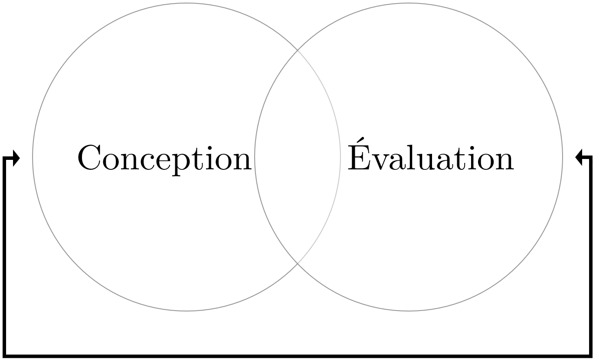
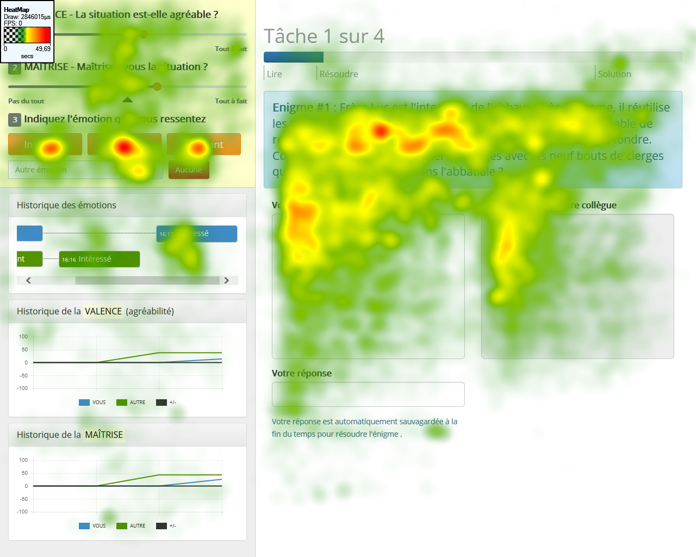
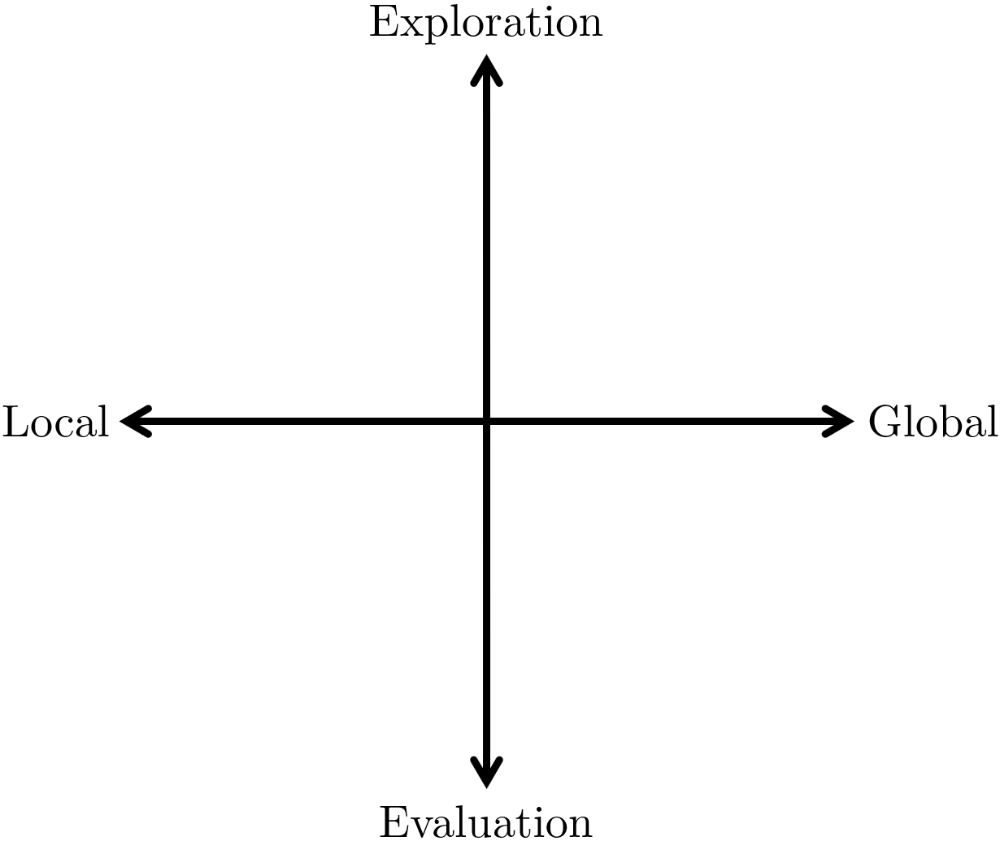
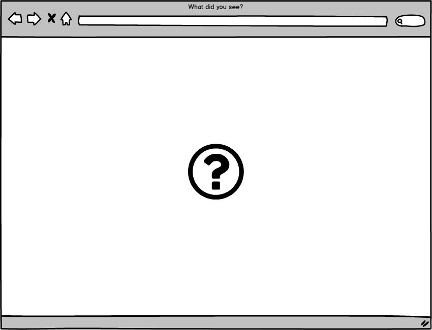
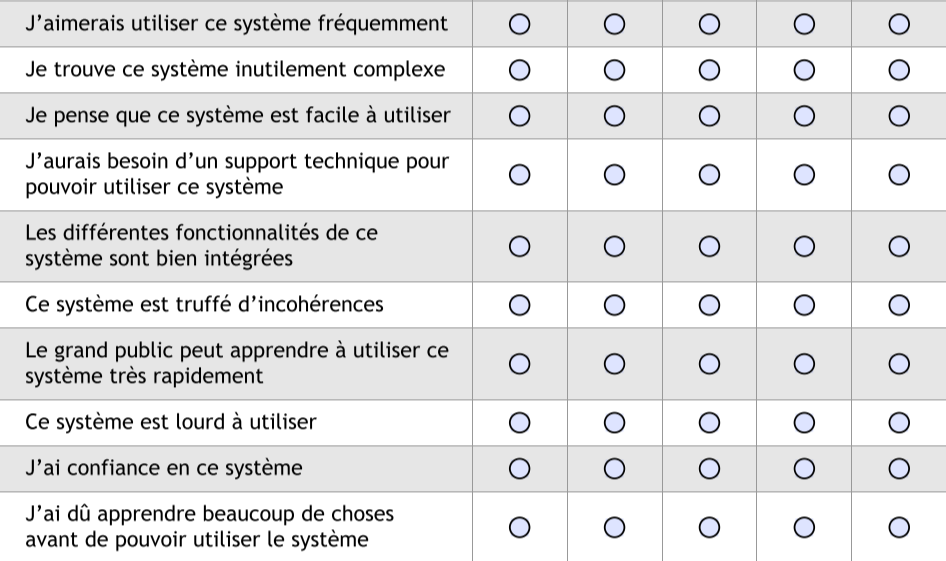
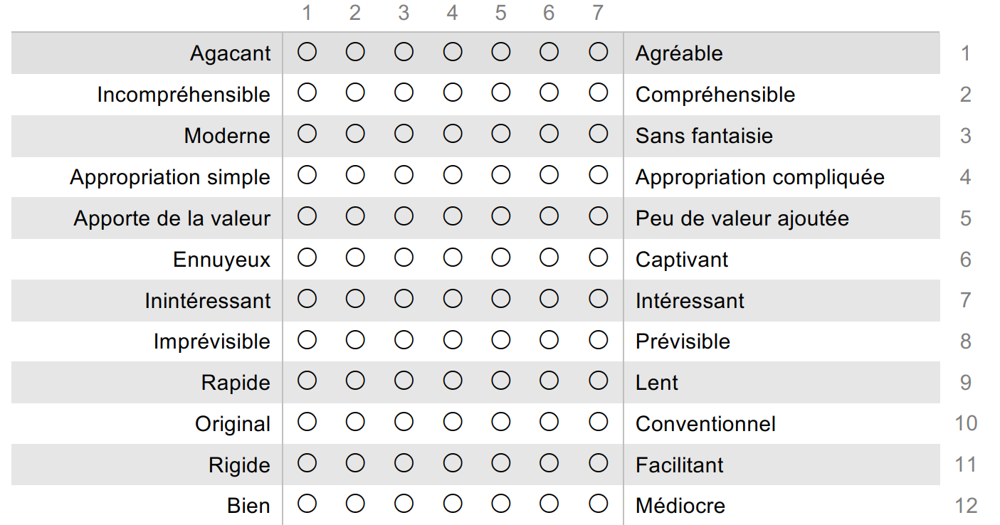
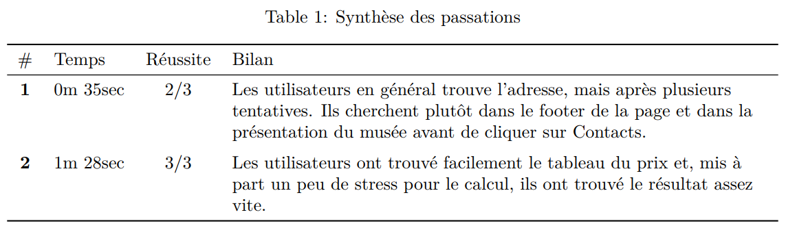
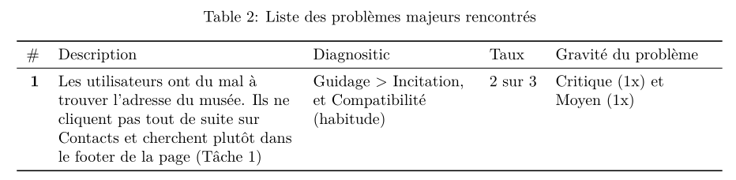

Techniques d'évaluation en UX
Mattia A. Fritz
TECFA, Université de Genève
Deux grandes fonctions
Un team/professionnel/projet de UX peut s'occuper exclusivement/principalement de l'une ou de l'autre, ou proposer les deux en même temps.
Évaluation
L'évaluation mesure l'adéquation entre les attentes des concepteurs/stakeholders d'une part, et l'utilisation et perception du public cible de l'autre.

Performance
Perception
Quelques méthodes
-
Oculométrie (Eye-tracking)
Mesure physiologique de type performance. -
Test A/B
Mesure statistique (souvent) de type performance. -
Test des 5 seconds
Mesure perceptive de la première impréssion. -
Échelles utilisabilité/UX
Mesures perceptives standardisées et validées empiriquement. -
Test utilisateur
Technique d'évaluation holistique combinant performance et perception.
Oculométrie
Mesure la position et le mouvement des yeux :
-
Fixations
Temps pendant lequel la pupille ne bouge pas (en réalité elle bouge toujours). -
Saccades
Temps pendant lequel la pupille se déplace grâce aux mouvements oculaires.
Yarbus (1967)
 Lucs-kho at English Wikipedia, Public domain, via Wikimedia Commons
Lucs-kho at English Wikipedia, Public domain, via Wikimedia Commons
Manifestation d'intérêt
 Test utilisateur sur un outil d'awareness émotionnelle dans un mémoire de Master (Fritz, 2015).Test A/B
Répartition aléatoire à une version de l'interface différente.
 Maxime Lorant,
CC BY-SA 4.0, via Wikimedia Commons
Maxime Lorant,
CC BY-SA 4.0, via Wikimedia Commons
Parfois avec test statistique
| Version | Utilisateurs | Oui | Non | % |
|---|---|---|---|---|
| A | 500 | 91 | 409 | 18.20% |
| B | 500 | 119 | 381 | 23.80% |
$\chi^2$(1, N = 1000) = 4.39, p = .036
Différents types de test A/B
Local vs. Global
Différence dans la labellisation d'un bouton
Différence dans l'affichage des éléments
Exploration vs. Evaluation
-
Exploration : sans hypothèse précise
Le team UX utilise les données du test A/B pour recueillir plus d'informations. La cause d'une éventuelle préférence d'une version plutôt que l'autre n'est pas établie en amont. Les résultats du test sont difficilement généralisables à d'autres choix de design/conception. -
Evaluation : avec hypothèse précise
Le team UX a une idée à propos d'un mécanisme causale qui pourrait expliquer la préférence d'une version plutôt que l'autre et veut tester la validité de cette hypothèse. Les résultats du test sont plus facilement généralisables à d'autres choix qui impliquent le même mécanisme causale.
Test des 5 seconds
Demander de dessiner l'interface et de deviner les objectifs du site après une brève exposition.
Échelles utilisabilité/UX
Questionnaires standardisés et/ou validés empiriquement.
-
Échelles utilisabilité
En général plus anciennes, limitées plutôt à évaluer l'efficacité, l'efficience et la satisfaction perçues. -
Échelles UX
En général plus récentes, elles utilisent une approche holistique, en intégrant les dimensions cognitive, sociale et affective.
Elles permettent la comparaison entre versions ou systèmes différents.
System Usability Scale
 Traduction libre de l'échelle de Brooke (1996).User Experience Questionnaire
 Traduction non validée pour le moment de Laugwitz, Held & Schrepp (2008)Test utilisateur
Technique holistique : performance et perception.
Photo by Annie Spratt on UnsplashÉtapes test utilisateur
-
Accueil
De manière similaire à une recherche scientifique, on met les participant-es dans les meilleures conditions (i.e. on teste le dispositif et non pas leurs capacités) -
Scénarisation/Mise en situation
Le test s'adresse à des persona (profils d'utilisateurs issues de l'analyse exploratoire) qu'il faut activer/simuler. -
Exécution de tâches en lien avec le scénario
Les participant-es effectuent une série de tâches authentiques en lien avec le scénario. Les passations sont en général encodées, e.g. avec enregistrement audio/vidéo et/ou oculométrie. -
Évaluation post-test et débriefing
Après les tâches, les participants répondent à des questions fermées (e.g. échelles UX), sémi-directifs et/ou ouvertes qui complémentent les tâches.
Tâches scénarisées
Trouvez les prix des tickets d'entrée au musée.
Vous souhaitez visiter le musée le dimanche, avec votre partenaire et vos deux enfants de 15 et 8 ans. Combien va vous coûter l’entrée au total ?
Les tâches conduisent très souvent à des réponses spécifiques, qui permettent de déterminer si la tâche est réussite.
Synthèse des tâches
Agrégation des passations pour avoir un aperçu général des tâches scénarisées.
Analyse des problèmes
Identification des problèmes majeurs, souvent avec utilisation de grilles/héuristiques pour effectuer un diagnostic (e.g. Bastien & Scapin, 1993).
Proposition de remédiation
— Votre team UX
Avis justifiés et accompagnés souvent par éléments multimédia (diagrammes, séquences vidéos, gaze path)
Évaluer les évaluateurs
Critères de sélections pour des utilisateurs :
-
Disponibilité de temps
Si le feedback/tâche à faire est trop simple et rapide, les gens ont tendance à donner des avis trop positifs ("Oui, super... allez-y!") -
Disponibilité à mettre en jeu sa propre réputation
Actions concrètes qui témoignent attachement, par exemple retweet d'un message de l'entreprise qui lance le produit. -
Disponibilité en termes d'argent
De manière paradoxale, on peut demander aux utilisateurs de payer pour participer à un test, ou les engager à achéter le produit à la fin de la conception.
Importance de la perspective
Une évaluation n'existe pas en absolu :
- Quels sont les objectifs ?
- Quel est le contexte d'utilisation ?
- Qui est le public cible ?
- Quelles sont les conséquences envisageables ?
- Qu'est-ce qu'on ne pourra pas savoir à cette étape ?
L'importance de la perspective
 Leonardo da Vinci,
CC BY-SA 4.0, via Wikimedia Commons
Leonardo da Vinci,
CC BY-SA 4.0, via Wikimedia Commons
{kind=link}
{kind=link}
.jpg){kind=link}